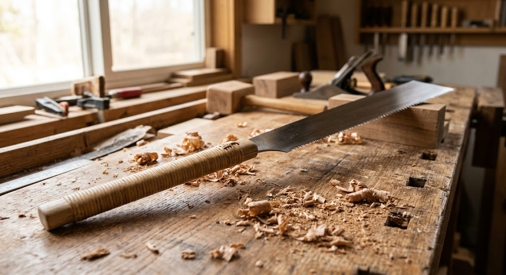

A Japanese ryoba pull saw with crosscut teeth on one edge and rip teeth on the other - a thin blade pulled toward you for a finer, more controlled cut than a Western push saw.

A thin blade pulled under tension cuts with less splintering.
Crosscut teeth on one edge, rip teeth on the other.
Pulling the blade is easier to guide accurately.
Built the way Japanese carpenters have cut wood for generations.
Japanese saws are designed to cut on the pull stroke rather than the push, which lets the blade stay thin and taut under tension instead of needing to be stiff enough to resist buckling.
That thinner blade removes less material and tends to track straighter, which is part of why Japanese joinery has a reputation for precision.
Clean cuts where splintering matters.
A versatile two-in-one blade for most cuts.
Many Japanese pull saws double for this too.
Check the current listing for blade replacement vs. sharpening details.
Yes, the pull stroke is often easier to control than a push saw.
One side is for crosscuts, the other for rip cuts along the grain.
A Japanese ryoba pull saw with a double-edged blade - see current pricing and availability on Amazon.
Check Price on Amazon →